Sprite
1. Overview
In a game, a Sprite is a display object that can be controlled on the screen. If a display object cannot be controlled, it is simply a node. More precisely, a Sprite is a 2D image that can be animated and controlled by modifying its properties, such as rotation, position, scale, and color.
Sprite is the basic display node for graphics. Through the graphics property, you can draw images or vector graphics. It supports rotation, scaling, translation, and other operations. Sprite is also a container class, allowing multiple child nodes to be added. LayaAir optimizes rendering for different scenarios, so that a single class can provide rich functionality while maintaining high performance.
In LayaAir 2D UI, Sprite is the base class for all node objects. As shown in Figure 1-1, the basic functions of the Sprite class are inherited by all its subclasses (only a partial inheritance hierarchy is shown in the figure; see the API documentation for full details). This article focuses on the fundamental features of Sprite, which will not be repeated for other node objects later.
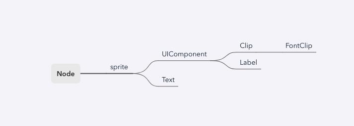
(Figure 1-1)
2. Using Sprite in the IDE
2.1 Creating Sprites
2.1.1 Creating in Scene2D
In the Hierarchy panel of a Scene2D, you can right-click on any node or empty space to create a sprite, as shown in Animation 2-1:
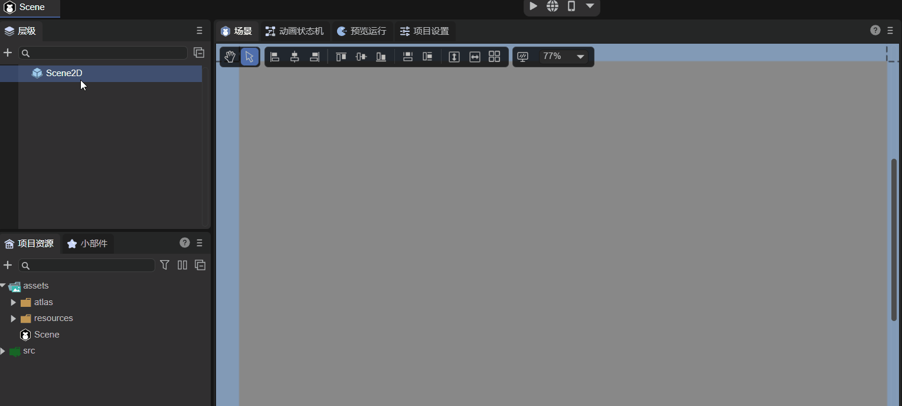
(Animation 2-1)
A newly created sprite is invisible initially—it is just an empty 2D node.
2.1.2 Creating from the Widget Panel
In the 2D tab of the Widget panel, you can also create a sprite under any node, as shown in Animation 2-2:
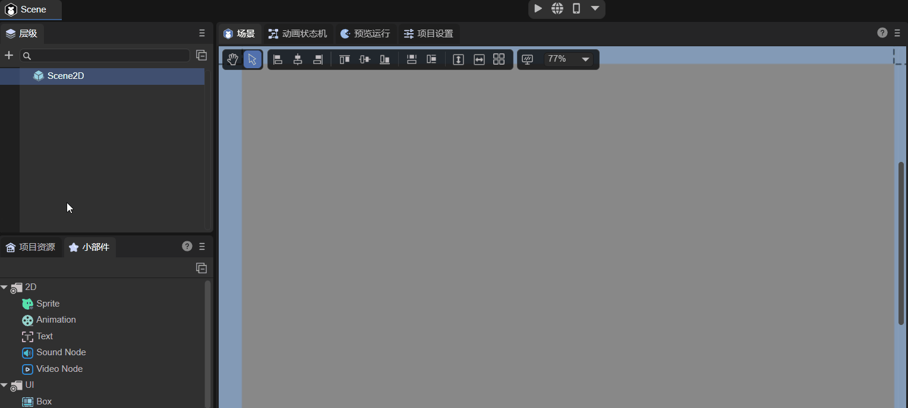
(Animation 2-2)
2.2 Basic Properties
As shown in Figure 2-3, a sprite has the following basic properties:
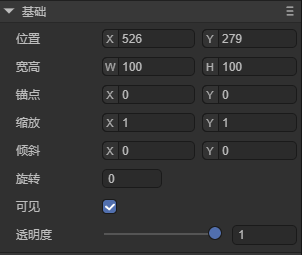
| Property | Description |
|---|---|
| Position | The position of the sprite |
| Size | Width and height of the sprite |
| Anchor | The anchor point of the sprite |
| Scale | Scaling factor |
| Skew | Skew angle |
| Rotation | Rotation angle |
| Visible | Visibility of the sprite |
| Alpha | Transparency |
Animation 2-4 demonstrates some basic operations on these properties:
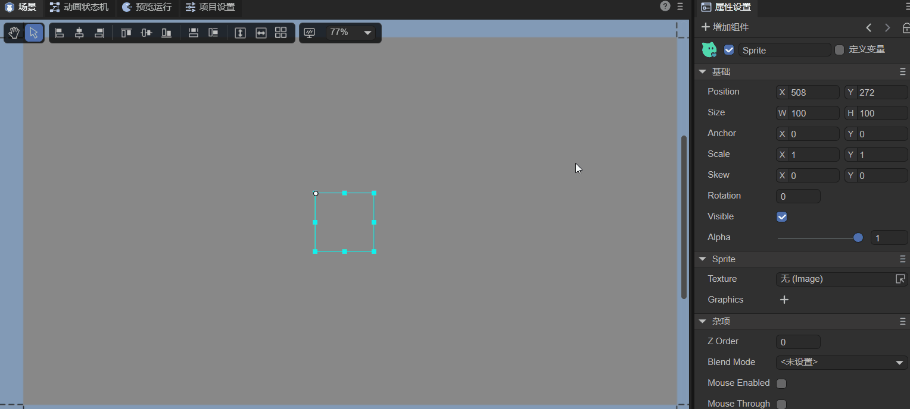
(Animation 2-4)
Since the sprite is empty, adjusting Visible or Alpha has no visual effect. Let’s look at some commonly used properties:
2.2.1 Position
The position refers to the location of the sprite’s pivot point on the canvas. It has x and y coordinates. The top-left corner of the canvas is the origin. Positive x goes right; positive y goes down.
2.2.2 Size
The size is the width (W) and height (H) of the sprite in pixels.
2.2.3 Anchor
Before understanding anchors, it’s important to know about the pivot. A sprite’s default pivot point is its top-left corner. Position, scale, and rotation are applied relative to this pivot. Changing the pivot controls the center of rotation and scaling.
Anchor is another way to set a pivot. Its values range from 0 to 1, representing a proportion of the sprite’s width and height. Changing the anchor also updates the pivot.
2.2.4 Scale
ScaleX and ScaleY scale the sprite horizontally and vertically around its pivot/anchor.
- Default is 1 (no scaling).
- 0 makes the sprite invisible.
- -1 mirrors the sprite. Negative values scale while mirroring.
2.2.5 Skew
SkewX and SkewY skew the sprite around its pivot/anchor.
2.2.6 Rotation
Rotation is applied around the pivot/anchor. Positive values rotate clockwise; negative values rotate counterclockwise.
2.2.7 Visibility
Visible is a boolean. Checked (true) = visible, unchecked (false) = invisible.
2.2.8 Alpha
Transparency ranges from 0 to 1.
2.3 Sprite-specific Properties
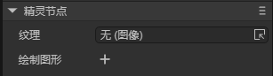
(Figure 2-5)
Specific properties include:
- Texture: Set an image or render texture.
- Graphics: Draw shapes like rectangles, circles, polygons, etc.
2.3.1 Image Texture
You can assign a texture by dragging an image into the Texture property, as shown in Animation 2-6:
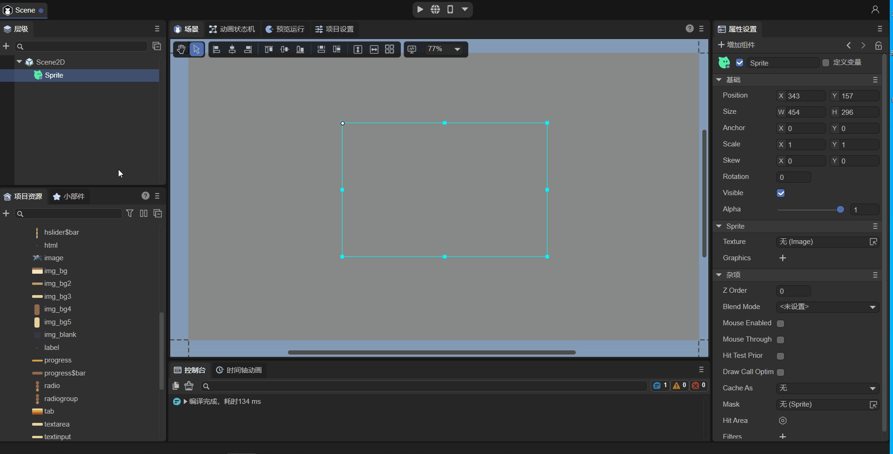
Tip: For rendering a single image, using
Textureon a Sprite is the most efficient approach.
2.3.2 RenderTexture
A RenderTexture is a special texture updated at runtime. A common use is setting it as a camera’s target texture. It can then be used like any regular texture in a Sprite.
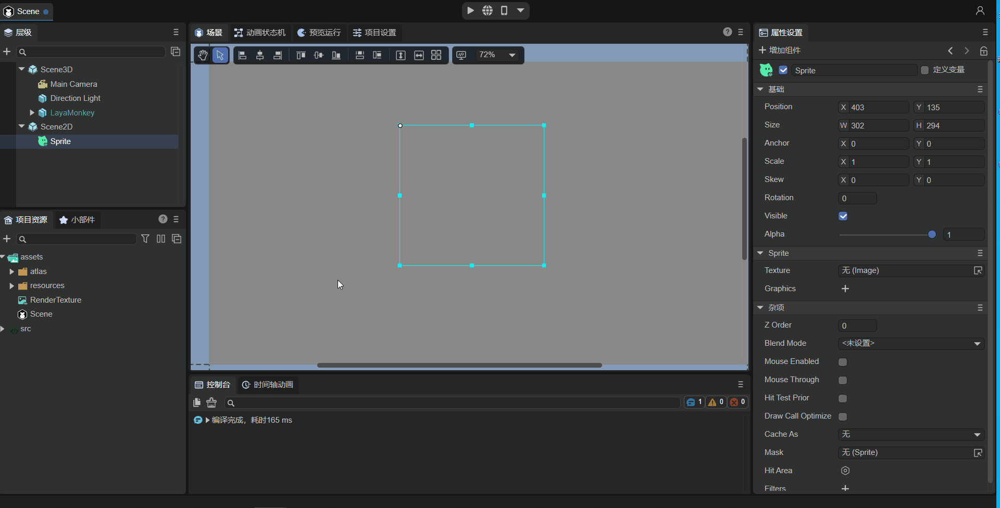
Note: Only Sprites support RenderTexture via the Texture property.
2.3.3 Graphics
Graphics allows you to draw shapes such as rectangles, circles, or polygons.
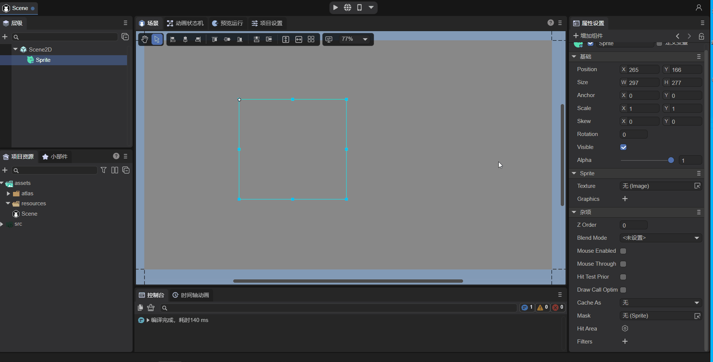
For details, see Drawing Graphics.
2.4 Other Properties
Other properties include:
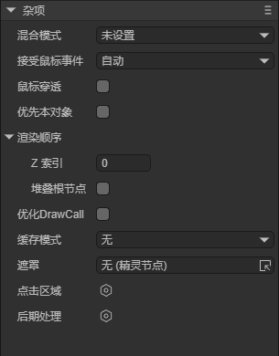
| Property | Description |
|---|---|
| Blend Mode | Set the blend mode (currently only "lighter") |
| Mouse Enabled | Whether the sprite receives mouse events |
| Mouse Through | Whether mouse events pass through the sprite |
| Hit Test Prior | Detect the sprite first or its children first |
| ZIndex | Render order in 2D space |
| Stacking Root | Whether child nodes’ zOrder is relative to this sprite |
| DrawCall Optimize | Enable draw call optimization |
| Cache As | Enable static cache |
| Mask | Set a mask node |
| Hit Area | Custom click area |
| Filters | Post-processing effects |
Mouse-related properties will be covered in detail in section 2.4.6.
2.4.1 Node Hierarchy
In the Hierarchy panel, nodes added later render above earlier nodes. At runtime, ZIndex can adjust global render order.
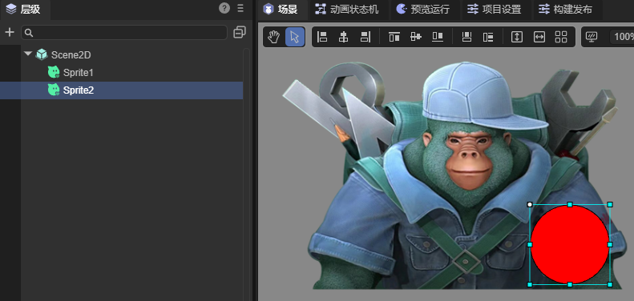
2.4.2 BlendMode
Using “lighter” blend mode will combine colors of overlapping sprites:
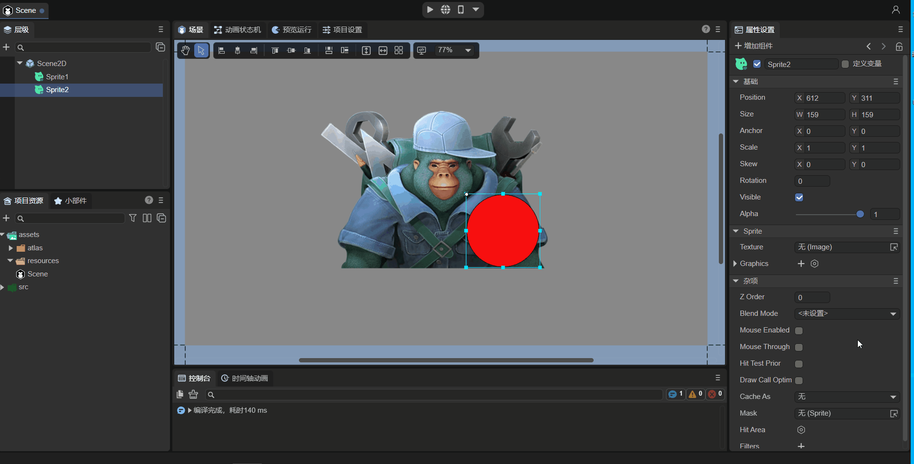
2.4.3 Draw Call Optimization
Enabling drawCallOptimize can reduce draw calls without changing visual hierarchy. Example:
drawCallOptimize = false, DC = 65drawCallOptimize = true, DC = 5
2.4.4 Cache As
cacheAs can improve rendering efficiency for mostly static UI. Options: None, Normal, Bitmap.
2.4.5 Mask
Masks are applied based on another node’s shape.
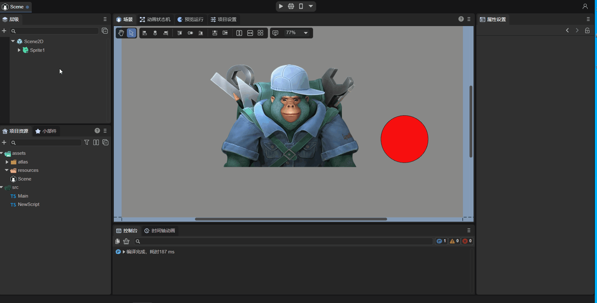
2.4.6 Mouse-related Properties
| Property | Description |
|---|---|
| MouseEnabled | Whether the sprite accepts mouse events |
| HitArea | Custom clickable area |
| MouseThrough | Allow clicks to pass through empty regions |
| Hit Test Prior | Priority for detecting self vs. child nodes |
Examples and behavior for these properties are shown in Animations 2-14 to 2-22.
2.4.7 PostProcess
Post-processing effects can be applied for artistic visuals.
2.5 Controlling Sprite via Script
Example code controlling properties programmatically:
const { regClass, property } = Laya;
@regClass()
export class NewScript extends Laya.Script {
@property({ type: Laya.Sprite })
public sprite: Laya.Sprite;
onAwake(): void {
this.sprite.loadImage("atlas/comp/image.png");
this.sprite.pos(Laya.stage.width / 2, Laya.stage.height / 2);
this.sprite.size(512, 313);
this.sprite.pivot(this.sprite.width / 2, this.sprite.height / 2);
this.sprite.anchorX = 0.5;
this.sprite.anchorY = 0.5;
this.sprite.scale(2, 2);
this.sprite.skew(5, 5);
this.sprite.rotation = 45;
this.sprite.visible = true;
this.sprite.alpha = 0.5;
}
}
3. Using Sprite in Code
The Laya.Sprite class is in the core library (laya.display.Sprite).
3.1 Creating a Sprite
let sprite = new Laya.Sprite();
Laya.stage.addChild(sprite);
3.2 Displaying Images
3.2.1 loadImage
let sprite = new Laya.Sprite();
sprite.loadImage("atlas/comp/image.png");
sprite.pos(Laya.stage.width >> 1, Laya.stage.height >> 1);
Laya.stage.addChild(sprite);
3.2.2 Setting texture
Laya.loader.load("atlas/comp/image.png").then(() => {
let sprite = new Laya.Sprite();
let res = Laya.loader.getRes("atlas/comp/image.png");
sprite.pos(Laya.stage.width / 2, Laya.stage.height / 2);
sprite.texture = res;
Laya.stage.addChild(sprite);
});
3.3 Basic Properties
let sprite = new Laya.Sprite();
sprite.loadImage("atlas/comp/image.png");
sprite.pos(20, 20);
sprite.anchorX = 0.5;
sprite.anchorY = 0.5;
sprite.scale(2, 2);
sprite.rotation = 30;
Laya.stage.addChild(sprite);
3.4 Other Properties
3.4.1 Setting zIndex
The zIndex property is used to adjust the rendering order of a Sprite. You can directly set this value in the IDE:
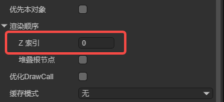
You can also set it through code:
onAwake(): void {
let sp = new Laya.Sprite;
sp.zIndex = 1;
}
Adjusting the rendering order through this property takes effect globally. It is not limited by the node hierarchy and does not affect the logical order of nodes in the tree.
Suppose we have the following node tree:
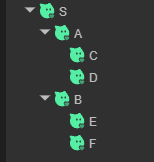
By default, the rendering order follows the depth-first traversal of the node tree:
S -> A -> C -> D -> B -> E -> F
If we set C’s zIndex to 1, the rendering order becomes:
S -> A -> D -> B -> E -> F -> C
If we then set D’s zIndex to -1, the rendering order becomes:
D -> S -> A -> B -> E -> F -> C
The larger the zIndex value, the later the node is rendered and the higher its display layer.
Note that zIndex is relative to its parent node. For example, if a parent node has a zIndex of 1 and a child node has a zIndex of 2, the child node’s effective zIndex value is 3. For instance, if you set A’s zIndex to 1, C’s to 1, and B’s to 1, the rendering order becomes:
S -> D -> E -> F -> A -> B -> C
C is rendered last because its effective zIndex value is 2.
In practical applications, you often want to adjust rendering order locally rather than globally. For example, if within a prefab you want a certain node to be rendered on top, you might set its zIndex to a positive number. However, after adding this prefab to the scene, if other nodes do not have a zIndex set, that node will appear above all other nodes in the scene, which is usually not the intended behavior.
To solve this, Sprite introduces another property — stackingRoot:
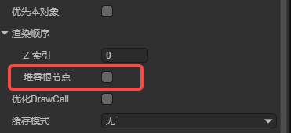
When this property is checked, all child and descendant nodes’ zIndex values only affect the rendering order within this node.
Using the same example, if we set A’s stackingRoot to true, set C’s zIndex to 2, and D’s zIndex to 1, the rendering order becomes:
S -> A -> D -> C -> B -> E -> F
As you can see, even though C and D have larger zIndex values than B, E, and F, they do not appear above them.
If we now set A’s zIndex to 3, the rendering order becomes:
S -> B -> E -> F -> A -> D -> C
Note that the order inside A is D then C, not C then D. In other words, a node marked as stackingRoot still uses its own zIndex to determine its global rendering order.
Sprite also has another property called zOrder. This changes the logical order of child nodes under the same parent, but does not affect rendering order.
This property is not exposed in the IDE and can only be set through code:
onAwake(): void {
// Create two nodes and add them to the scene
let sp1 = new Laya.Sprite();
sp1.name = "sp1";
this.owner.addChild(sp1);
let sp2 = new Laya.Sprite();
sp2.name = "sp2";
this.owner.addChild(sp2);
sp1.zOrder = 1;
sp2.zOrder = 0;
}
Runtime result:
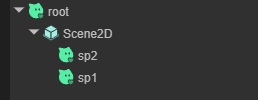
Although sp1 was added first in the code, its zOrder value is higher, so it appears above sp2 in hierarchy.
3.4.2 Setting BlendMode
Example code for setting blendMode:
let sp1 = new Laya.Sprite();
Laya.stage.addChild(sp1);
// Load and display image 1
sp1.loadImage("atlas/comp/image.png", null);
let sp2 = new Laya.Sprite();
Laya.stage.addChild(sp2);
// Load and display image 2
sp2.loadImage("resources/layabox.png", null);
sp2.pos(200, 190);
// Set blendMode
sp2.blendMode = "lighter";
Runtime result:
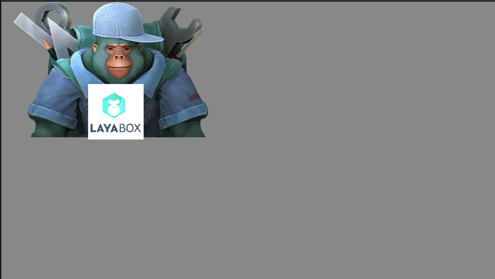
(Figure 3-4)
Compared with Figure 3-3, when using the "lighter" blendMode, the colors of sp2 and sp1 are blended together.
3.4.3 Setting autoSize
Specifies whether to automatically calculate width and height. The default is false.
By default, a Sprite’s width and height are 0 and do not change with its drawn content.
If you want to automatically determine the width and height based on the drawn content, set this property to true. Example:
let sprite = new Laya.Sprite();
// Add to stage
Laya.stage.addChild(sprite);
sprite.autoSize = true;
3.4.4 Caching as a Static Image
Example:
let sprite = new Laya.Sprite();
Laya.stage.addChild(sprite);
// Cache as a static image
sprite.cacheAs = "bitmap";
3.4.5 Setting a Mask
Example:
let sprite = new Laya.Sprite();
Laya.stage.addChild(sprite);
sprite.loadImage("atlas/comp/image.png", null);
// Create a mask
let mask = new Laya.Sprite();
sprite.addChild(mask);
mask.graphics.drawCircle(200, 200, 100, "#FFFFFF");
// Apply the mask after 1 second
setTimeout(() => {
sprite.mask = mask;
}, 1000);
Runtime result:
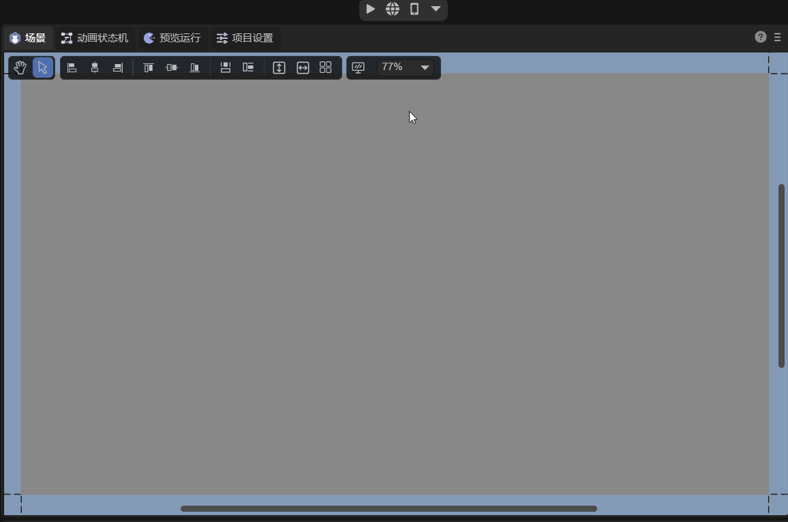
(Animated Figure 3-5)
3.4.6 Setting the Click Area (hitArea)
Mouse-related properties share similar code patterns.
Here’s an example using hitArea:
let sp = new Laya.Sprite();
Laya.stage.addChild(sp);
// Load and display an image
sp.loadImage("atlas/comp/image.png", null);
// Set click event
sp.on("click", this, () => {
Laya.Tween.to(sp, { scaleX: 0.5, scaleY: 0.5 }, 100);
});
// Define click area
let hitArea: Laya.HitArea = new Laya.HitArea();
hitArea.hit.drawRect(0, 0, 100, 100, "#00ff00");
sp.hitArea = hitArea;
Runtime result:
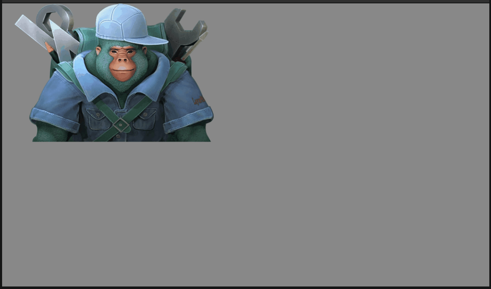
(Animated Figure 3-6)
You can see that clicks within the defined area trigger the event, while clicks outside do not.
If you don't define a hitArea, any click within the image bounds will trigger the event.
4. Mouse Through
When we need to make mouse events penetrate a node without responding, we can use the Mouse Through feature.
In the Sprite component properties, check the Mouse Through option. As shown in Animated Figure 4-1:
(Animated Figure 4-1)
Mouse Through feature is often used for UI backgrounds or decorative nodes that don't need mouse interaction. When enabled, the node becomes "transparent" to mouse events, which will be passed to the node below.
5. Hit Test Prior
Hit Test Prior controls the priority order of mouse hit testing. When checked, the current node has priority for mouse hit testing, blocking its child nodes from receiving mouse events even if they are in the mouse collision area.
5.1 Understanding Hit Test Prior
- Unchecked (false): Mouse events are tested on child nodes first, then recursively to parent nodes
- Checked (true): The current node is tested first, and if hit, child node testing is skipped
5.2 Example
Let's demonstrate with an example:
- Create Sprite1 (parent node)
- Create Sprite2 (child node) under Sprite1
- Add the following script to Sprite1:
const { regClass } = Laya;
@regClass()
export class Sprite1Script extends Laya.Script {
onEnable(): void {
this.owner.on(Laya.Event.CLICK, this, () => {
console.log("Sprite1 clicked");
});
}
}
Add the same script to Sprite2 (change "Sprite1" to "Sprite2" in the log).
When Hit Test Prior is unchecked (default):
- Clicking Sprite2 outputs: "Sprite2 clicked" followed by "Sprite1 clicked"
- Both parent and child respond
When Hit Test Prior is checked on Sprite1:
- Clicking Sprite2 only outputs: "Sprite1 clicked"
- Only parent responds, child is blocked
6. Post-Process
Post-processing is used to implement various special image effects to achieve optimal artistic results. There are many types of post-processing, and different effects require different post-processing features.
Click to create a post-process instance:
After checking the Enabled property, the post-process effect takes effect. This property is checked by default:
Click the plus button on the right side of the effect list to select the post-process effect you want to create:
For specific usage of post-processing, we explained it in the Post-Process article. Developers can refer to this article.
7. Script Control Properties
In the Scene2D property panel, add a custom component script. Then drag the Sprite node into its exposed property entry, as shown in Animated Figure 7-1:
(Animated Figure 7-1)
Then, you can control the Sprite through code in the component script. Example code:
const { regClass, property } = Laya;
@regClass()
export class NewScript extends Laya.Script {
@property({ type: Laya.Sprite })
public sprite: Laya.Sprite;
constructor() {
super();
}
onAwake(): void {
this.sprite.loadImage("atlas/comp/image.png"); // Texture: image path
this.sprite.pos(Laya.stage.width >> 1, Laya.stage.height >> 1); // Position: screen center
this.sprite.x = Laya.stage.width/2; // Set position x, y separately
this.sprite.y = Laya.stage.height/2;
this.sprite.size(512, 313); // Size
this.sprite.width = 512; // Set width and height separately
this.sprite.height = 313;
this.sprite.pivot(this.sprite.width/2, this.sprite.height/2); // Pivot point: sprite center
this.sprite.pivotX = this.sprite.width/2; // Set pivot x, y separately
this.sprite.pivotY = this.sprite.height/2;
this.sprite.anchorX = 0.5; // Anchor: sprite center
this.sprite.anchorY = 0.5;
this.sprite.scale(0.5, 0.5); // Scale
this.sprite.scaleX = 2; // Set scale x, y separately
this.sprite.scaleY = 2;
this.sprite.skew(5, 5); // Skew
this.sprite.skewX = 5; // Set skew x, y separately
this.sprite.skewY = 5;
this.sprite.rotation = 45; // Rotation angle
this.sprite.visible = true; // Visible
this.sprite.alpha = 0.5; // Transparency
}
}
8. Using Through Code
8.1 Creating a Sprite
Create a Sprite instance:
onAwake(): void {
let sprite = new Laya.Sprite();
// Add to stage
Laya.stage.addChild(sprite);
}
8.2 Displaying Images
Image display is fundamental to game development. The Sprite class provides Sprite.loadImage and Sprite.texture for displaying images.
8.2.1 loadImage
/**
* <p>Load and display an image. Equivalent to loading an image then setting the texture property</p>
* <p>Note: 2.0 changes: Multiple calls only display one image (1.0 displays multiple), x,y,width,height parameters removed.</p>
* @param url Image URL
* @param complete (Optional) Load completion callback
* @return Returns the sprite object itself
*/
loadImage(url: string, complete?: Handler): Sprite;
Code example:
let sprite = new Laya.Sprite();
// Load and display an image, centered
sprite.loadImage("atlas/comp/image.png", null);
sprite.pos(Laya.stage.width >> 1, Laya.stage.height >> 1);
// Add to stage
Laya.stage.addChild(sprite);
8.2.2 Setting texture
/**
* Set a Texture instance and display this image (clears any previous drawing).
* Equivalent to graphics.clear(); graphics.drawImage(), but with higher performance
* Can also assign an image URL, which automatically loads and displays the image
*/
get texture(): Texture;
set texture(value: Texture);
Code example:
Laya.loader.load("atlas/comp/image.png").then(() => {
let sprite = new Laya.Sprite();
// Set sprite texture and center it
let res = Laya.loader.getRes("atlas/comp/image.png");
sprite.pos(Laya.stage.width >> 1, Laya.stage.height >> 1);
sprite.texture = res;
// Add to stage
Laya.stage.addChild(sprite);
});
Both 8.2.1 and 8.2.2 examples have the same runtime effect, as shown in Figure 8-1. Developers can choose based on their needs.
(Figure 8-1)
8.3 Basic Properties
Let's look at code examples:
let sprite = new Laya.Sprite();
// Load and display an image
sprite.loadImage("atlas/comp/image.png", null);
// Set image starting position
sprite.pos(20, 20);
// Set anchor
sprite.anchorX = 0.5;
sprite.anchorY = 0.5;
// Set scale
sprite.scale(2, 2);
// Rotate
sprite.rotation = 30;
// Add to stage
Laya.stage.addChild(sprite);
Runtime effect shown in Figure 8-2:
(Figure 8-2)
8.4 Other Properties
8.4.1 Setting zIndex
The zIndex property adjusts the rendering order of Sprites. You can set this value directly in the IDE:
Or set it through code:
onAwake(): void {
let sp = new Laya.Sprite;
sp.zIndex = 1;
}
Using this property to adjust rendering order is global and not limited by the node tree, nor does it affect the logical order of nodes in the tree.
Assume we have this node tree:
Default order follows depth-first traversal of the node tree, i.e.:
S->A->C->D->B->E->F
If we set C's zIndex to 1, the render order becomes:
S->A->D->B->E->F->C
Then set D's zIndex to -1, render order becomes:
D->S->A->B->E->F->C
The larger the zIndex value, the later the rendering, and the higher the display layer.
Note: zIndex values are relative to the parent node. For example, if the parent node's zIndex is 1 and the child node's zIndex is 2, the child node's final effective zIndex value is 3. For example, setting A's zIndex to 1, C's zIndex to 1, and B's zIndex to 1 gives render order:
S->D->E->F->A->B->C
C renders last because its effective zIndex value is 2.
In practice, we usually need to adjust the render order of nodes locally, not globally. For example, in a prefab, if we want a node to display on top, we set zIndex to a positive number. But when this prefab is added to a scene, if other nodes don't have zIndex set, this node will display above all nodes, not just within the prefab content, which is clearly not the intended behavior.
To solve this problem, Sprite introduces another property: stackingRoot:
When checked, all child and grandchild node zIndex values only affect render order within this node.
Using the previous example, if we set A's stackingRoot to true, C's zIndex to 2, and D's zIndex to 1, the render order becomes:
S->A->D->C->B->E->F
We can see that although C and D's zIndex values are larger than B, E, F, they don't display above B, E, F.
If we then set A's zIndex to 3, the render order becomes:
S->B->E->F->A->D->C
Note this is A->D->C, not D->C->A. This means that for nodes set as stackingRoot, their own zIndex still represents the global render order.
Sprite also has a zOrder property, which changes the logical order of child nodes within their parent, but does not change the render order.
This property is not exposed in the IDE and can only be set through code:
onAwake(): void {
// Create two nodes and add to scene
let sp1 = new Laya.Sprite();
sp1.name = "sp1";
this.owner.addChild(sp1);
let sp2 = new Laya.Sprite();
sp2.name = "sp2";
this.owner.addChild(sp2);
sp1.zOrder = 1;
sp2.zOrder = 0;
}
Runtime effect:
We can see that although sp1 was added to the scene first in the code, because sp1's zOrder value is larger, its hierarchy is deeper than sp2.
8.4.2 Setting BlendMode
Example code for setting BlendMode:
let sp1 = new Laya.Sprite();
Laya.stage.addChild(sp1);
// Load and display an image 1
sp1.loadImage("atlas/comp/image.png", null);
let sp2 = new Laya.Sprite();
Laya.stage.addChild(sp2);
// Load and display an image 2
sp2.loadImage("resources/layabox.png", null);
sp2.pos(200, 190);
// Set blendMode
sp2.blendMode = "lighter";
Runtime result:
(Figure 8-4)
Compared with Figure 8-3, we can see that after using "lighter" blendMode, sp2's color is blended with sp1's color.
8.4.3 Setting autoSize
Specifies whether to automatically calculate width and height data. Default is false. Sprite width and height default to 0 and don't change with drawn content. If you want to get width and height based on drawn content, set this property to true. Example code:
let sprite = new Laya.Sprite();
// Add to stage
Laya.stage.addChild(sprite);
sprite.autoSize = true;
8.4.4 Cache as Static Image
Example code:
let sprite = new Laya.Sprite();
Laya.stage.addChild(sprite);
// Cache as static image
sprite.cacheAs = "bitmap"
8.4.5 Setting Mask
Code example:
let sprite = new Laya.Sprite();
Laya.stage.addChild(sprite);
sprite.loadImage("atlas/comp/image.png", null);
// Create mask
let mask = new Laya.Sprite();
sprite.addChild(mask);
mask.graphics.drawCircle(200, 200, 100, "#FFFFFF");
// Add mask to image
setTimeout(() => {
sprite.mask = mask; // Execute mask after 1 second
}, 1000);
Runtime effect:
(Animated Figure 8-5)
8.4.6 Setting Click Area hitArea
There are many mouse-related properties, but code usage is similar. Here we use hitArea as an example:
let sp = new Laya.Sprite();
Laya.stage.addChild(sp);
// Load and display an image
sp.loadImage("atlas/comp/image.png", null);
// Set image click event
sp.on("click", this, () => {
Laya.Tween.to(sp, { scaleX: 0.5, scaleY: 0.5 }, 100);
});
// Set mouse click area
let hitArea: Laya.HitArea = new Laya.HitArea();
hitArea.hit.drawRect(0, 0, 100, 100, "#00ff00");
sp.hitArea = hitArea;
Runtime result:
(Animated Figure 8-6)
We can see that clicks within the defined area trigger the event, while clicks outside do not. If you don't set hitArea, any click within the image bounds will trigger the event.